Phonon calculation¶
In this section, several modules are provided to calculate phonon and corresponding characters.
PyPWmat¶
This module is the interface between PWmat and Phonopy. Phonopy is an open source package for phonon calculations at harmonic and quasi-harmonic levels. It can be used to calculate phonon band structures, phonon DOS and partial DOS, phonon thermal properties, etc. Compared to other interface such as VASP&Phonopy, this module can calculate the phonon of the defect system more efficiently.
Download and installation¶
Users should use anaconda2 and phonopy-1.12.8, since the PyPWmat was writen using python2. First, download the anaconda2. Users could find version Anaconda2-5.3.1-Linux-x86_64.sh at http://www.pwmat.com:3389/#/MSTATION/Anaconda. If anconda3 is already installed, one can change the environment by the following steps.
$ sh Anaconda2-5.3.1-Linux-x86_64.sh -b -p $HOME/anaconda3/envs/py2
$ rm -f $HOME/anaconda3/envs/py2/bin/conda*
$ rm -f $HOME/anaconda3/envs/py2/conda-meta/conda-*
$ rm -f $HOME/anaconda3/envs/py2/bin/activate
$ rm -f $HOME/anaconda3/envs/py2/bin/deactivate
$ cd $HOME/anaconda3/envs/py2/bin
$ ln -s ../../../bin/conda .
$ ln -s ../../../bin/activate .
$ ln -s ../../../bin/deactivate .
Users could use ‘source activate py2’ to activate anaconda2 environment and ‘source deactivate py2’ to return anaconda3. Next, download phonopy-1.12.8 at https://github.com/atztogo/phonopy/releases. Untar the package, enter the directory and ‘pip install ./’. After getting anaconda2 environment and phononpy, users could download PyPWmat (i.e. PyPWmat-1.0.7) and untar the package in selected directory(i.e. /home/user_name/). One should modifying environment variables in .bashrc.
export PATH=(where you place it)/PyPWmat-1.0.7/bin:$PATH
export PYTHONPATH=(where you place it)/PyPWmat-1.0.7:$PYTHONPATH
Finally, reload the environment variables using ‘source ~/.bashrc’. Users could varify the installation by ‘which PWmatPhonon.py’.
Calculate phonon band structure for crystal¶
Users should calculate the phonon band first for further calculations. PyPWmat only support finite displacement method (No density functional perturbation theory!). To get dynamic matrix, finite displacement method introduces atom displacement in equilibrium structure and calculate corresponding Hellmann-Feynman forces. Considering the periodic boundary condition, we need to make supercell to reduce the disturbances from adjacent period. Phonopy genetate structures according to symmetry. Only scf calculations are needed for different displacements. The workflow is similar to VASP&Phonopy, but PyPWmat provide a file named PWphonon.in to integrate the input. Here is the flow chart of calculating crystal phonon band.
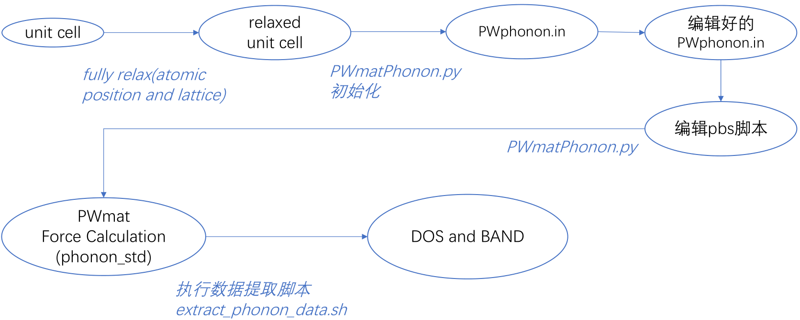Take GaN as an example, first, set up a working directory ‘phonon’. Then prepare a fully relaxed atom.config, a scf etot.input in ‘phonon’ and correspongding pseudopotential files in ‘phonon’.
2 2
in.atom = atom.config
job=scf
XCFUNCTIONAL=PBE
Ecut = 60.0000000000000
Ecut2 = 240
Ecut2L = 240
WG_ERROR = 1.E-6
E_ERROR = 0.0
RHO_ERROR = 1.0E-6
in.psp1=ONCV.PWM.Ga.UPF
in.psp2=ONCV.PWM.N.UPF
in.psp3=ONCV.PWM.Zn.UPF
MP_N123 = 3 3 3 0 0 0
OUT.FORCE = T
OUT.WG = F
This example etot.input is only used to create PWphonon.in, so tags such as job and OUT.WG are not important. The kmesh MP_N123 here is the values for supercell calculations. Phonon calculation is very sensitive to accurancy of the force. So, it might be necessary to set the paremeters accurately. Otherise, it might have imaginary frequency. Users could type ‘PWmatPhonon.py’ to generate the PWphonon.in with some default values. Edit PWphonon.in according to real requirement. (Warning: If there is already a PWphonon.in, and if you type PWmatPhonon.py, then the phonon calculation will begin!) After editing, the PWphonon.in might like this:
JOB = std # std:normal phonon, defect:defect system phonon, sub:subsystem phonon
NODES = 2 2 # node1 node2 for pwmat parallel configuration
WALL_TIME = 1000:00:00 # wall time for the queue system (torque): hours:minutes:seconds
MP_N123 = 3 3 3 0 0 0 # k-mesh for the supercell calculations; it is 3 3 3 0 0 0 for the unitcell calculation
DIM = 3 3 2 # supercell dimension which will be used to make displacements
PRIMITIVE_AXIS = 1.0 0.0 0.0 0.0 1.0 0.0 0.0 0.0 1.0 # the primitive cell for building the dynamical matrix
FC_SYMMETRY = .TRUE. # This tag is used to symmetrize force constants partly
ACCELERATION = .TRUE. # read in in.wg in.rho from forces-001 calculation
BAND = 0.0 0.0 0.0 0.5 0.0 0.0 0.33333333 0.33333333 0 0.0 0.0 0.0 0.0 0.0 0.5 # special q points in Brillioun zone
BAND_LABELS = $\Gamma$ M K $\Gamma$ Z # labels of the special q points
BAND_POINTS = 101 # number of q-point along the high symmetry path
FREQUENCY_CONVERSION_FACTOR = THz # unit of the frequency:"THz", "cm^-1", "eV", "meV"
DOS = .TRUE. # switch to the DOS calculation
FMIN = -1.0 # minimum of frequency DOS range
FMAX = 25.0 # maximum of frequency DOS range
MP = 10 10 10 # q-mesh for the DOS calculation
FPITCH = 0.1 # frequency interval for DOS calculation
SIGMA = 0.1 # smearing width for DOS calculation
EIGENVECTORS = .TRUE. # output eigenvectors
SUBJOB = torque # slurm or torque
SUBJOB_FILENAME = pwmat.pbs # submit job filename
DISPLACEMENT = 0.05 # amplitude of atomic displacement
SUBJOB and SUBJOB_FILENAME are the PBS system name PBS submit filename, respectively. The default PBS system is TORQUE and another option is SLURM. The default filename is ‘pwmat.pbs’. You have to edit and put the PBS file in the same directory of PWphonon.in and the filename must be exactly the same as with the “SUBJOB_FILENAME” in PWphonon.in. The last line is used to control the atomic displacement in the supercell whise default value is 0.01. If the SCF is hard to converge, so there are some noise, then larger displacenebt can have the results above the noise. But if the displacement is too large, the numerical derivative will not be accurate. To check the convergence, one can check ‘grep update REPORT’. And also check the total force in OUT.FORCE.BACK. As a indication of the convergence, the total force should be almost zero (at least much smaller than the atomic forces caused by the displacement). After edit PWphonon.in, type ‘PWmatPhonon.py’ again and the supercell calculations with different atomic displacements will start. It will generate a new directory: phonon_std(under ‘phonon’). Within ‘phonon_std’, it will have force-00x subdirectories for supercell displacement calculations (you can check the files within those directories, just to see what kind of calculations you have). Each force-00x represents one atomic diplacement. The ‘phonon_std’ might looks like this:

After the PWmat supercell calculations have finished, type ‘./extract_phonon_data.sh’ inside phonon_std and the screened print out might like:
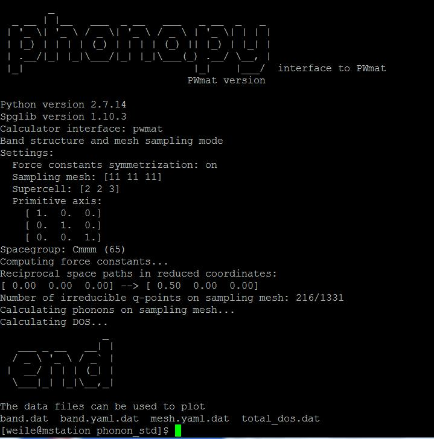It will generate the following files:

- In particular:
band.dat, total_dos.dat can be plotted by Gnuplot to generate the phonon band and DOS. mesh.yaml.dat has all the q-point phonon modes(vector). FORCE_SETS could be used to further calculation such as defect calculation. The phonon band and DOS are also shown:
Calculate defect phonon mode¶
Defect phonon mode has attracted much attention, but there might be too many atomic displacement in defect systems. So it is too expensive to calculate the defect phonon. PyPWmat provides a easy way to calculate defect phonon by defining the scope of defect. Then atoms out of scope could be calculated using FORCE_SETS generated in std calculations.

To use the results in std, user should prepare the defect structure using supercell generated in phonon_std (atom_3x3x2.config here) and fully relax it with PWmat (Warning: You shall not relax the crystal!). Rename relax results final.config to atom_defect.config in ‘phonon’ and prepare etot_defect.in as well. Use the same MP_N123 as in the etot.input in std calculations. Use the same Ecut and Ecut2 as for crystal calculation as well. Note: PWmat only accepts structure file named atom.config in current version! So atom_defect.config is only a identification which must exist in the directory. But user should only use ‘in.atom = atom.config’ in etot_defect.input, not ‘in.atom = atom_defect.config’. Then edit PWphonon.in again. From the crystal bulk PWphonon.in (Note: DIM=n1,n2,n3 must be the same as the defect supercell), you need change the following:
JOB = defect DEFECT_CENTER = x1, x2, x3 #(x1,x2,x3) is the fractional coord. for the center of the point defect; DEFECT_RADIUS = R # R in Ang is the radius size of the defect MP = 5 5 5 # this is the q-point for the defect supercell, should not be too big
- For atoms within R, the explict displacement and force calculations will be carried out. For atoms outside the R, their dynamic matrix element will be approximated by the bulk one calculated before. So user should test the R value to ensure that the defect supercell and the bulk supercell should have roughly the same outside R.
After Pwphonon.in is edited, type ‘PWmatPhonon.py’. This will generate a new directory ‘phonon_defect’ and begin the defect calculation. The generated files including extract_phonon_data.py is now in ‘phonon’ not ‘phonon_defect’. Type ‘./extrac_phonon_data.py’ and you might get the screen like that:

Total_dos.dat could be used to plot the DOS and qpoints.yaml.dat contains the Gamma point phonon energy and their eigen vectors (eigen vectors are three complex vectors, corresponding to six columns). (They can be used to calculate nonradiative decay rate). Users who proceed this calculation might focus on the defect localized modes.

Calculate subsystem phonon mode¶
When we study surface absorption, we might pay more attention to the phonon mode of the absorbed molecule and the surrounding surface atoms. So we need subsystem calculation in which other atoms are kept static. No primitive cell calculations are needed before subsystem calculations.
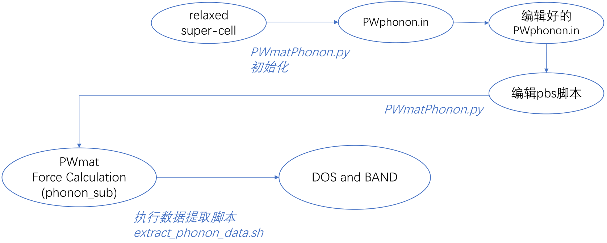First prepare atom_all.config (fully relaxed) in ‘phonon’. Just like the example below, the red box atoms is the atoms to be calculated. One should give the atom setting ‘1 1 1’, like the setting in relaxation. The atoms with ‘0 0 0’ will not in consideration to be calculated. The atom_all.config is the whole system, in other words, a supercell!
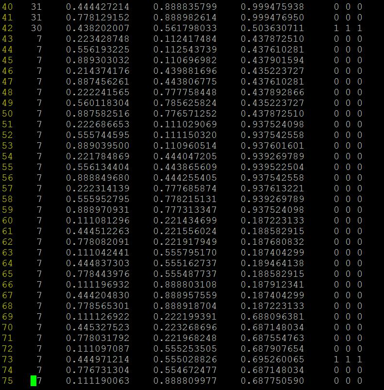The prepare etot_sub.input in ‘phonon’. Details of etot_sub.input is the same as the previous example. Type ‘PWmatPhonon.py’ and edit PWphonon.in. Compared to crystal band calculations, you only need to change ‘JOB = std’ to ‘JOB = sub’. You could also change values of MP to get the q-point you are interested in (ususally for subsystem calculation, only Gamma point is needed). Type ‘PWmatPhonon.py’ to generate directory ‘phonon_sub’ and start calculations. After the PWmat supercell calculations have finished, inside type ‘./extract_phonon_data.sh’ in ‘phonon_sub’ and generate mesh.yaml.dat which has all the q-point phonon modes.

The phonon mode and vector (at Gamma) for the subsystem (only 2 atoms so 6 modes). The vector is according to the atoms in atom_sub.config (the sub system). For catalysis calculation, these modes could be used to estimate the zero phonon mode energy for molecules absorbed on the surface. File atom_sub.config contains the part of atoms involved in the phonon mode. SUB_INDEX is the atoms index which mapping the atoms in atom_sub.config to atom_all.config. It is needed by the script ‘extract_phonon_data.sh’.
High tempereture and anharmonic phonon modes for unstable structure¶
Please go familiar with PyPWmat module before run this module!
Problems and basic idea¶
It is well know some of the high symmetry phase are unstable at low temperature (almost T=0 K). Nevertheless, by enforcing symmetry, in the relax calculation, we can relax to such high symmetry structure (at T=0 K). However, if we calculate the phonon spectrum, we will find imaginary convergence error irrelative phonon modes, which can be at both Gamma point and off Gamma point. The question is, experimentally, such structure is stable at higher temperature (also shown by high temperature molecular dynamics).
According to spontaneous symmetry breaking theory, the above systems have potential surface cross section like a in following picture:

The high symmetry point is unstable in a. But at higher temperature, the vibration amplitude is large, so it can reach points like C and D effectively. If we judge from the energy (or the force) at C and D, and draw a parabolic curve (the dashed lines c and d), then they can be considered as having positive phonon frequency. At given temperature, if the oscillation amplitude is \(d_{C}\) (the C curve), then the frequency is \(\omega_{C}\). For given \(\omega_{C}\) and T, we can come back to estimate the \(d_{C}\) (each degree of freedom will have enegy about \(0.5k_{B}T\)). So there can be self-consistency.
If the initial estimation of \(d_{C}\) is too small, \(\omega_{C}\) will be too small, then \(d_{C}\) dervied from \(\omega_{C}\) and T will be larger than the origin \(d_{C}\). This will increase \(d_{C}\). In another word, the self-consistency is a stable one. One can estimate such self-consistency one phonon mode at a time. But that will not be the best. Since all these are results of anharmonic effect, it thus will be better to estimate all the modes together, all at their corresponding amplitudes at T (including phonon modes which are real at small T).
The following procedure is actually a rough one, not really excat. It involves several approximations. But qualitatively, it can be useful.
Phys.Rev.Lett.100,095901(2008)
The formulas and procedures¶
We will assume the same phonon modes calculated at the high symmetry point at T = 0 K, even though some of the phonon modes have imaginary frequency. We call such phonon modes: \(\mu_{k}'(i)\), here k is the mode index, i is the atom index. For a given temperature T, and a calculated phonon frequency \(\omega_{k}\), we can calculate a mode amplitude \(Q_{k}\). Now, we can have an atomic displacement (measured from the high symmetry points): \(dR(i)=\sum_{k}sign(k)Q_{k}\mu_{k}'(i)\). Here, \(sign(k)=\pm\) is a random set, but fixed throughout the iterations. Now using this \(dR(i)\), redo a SCF calculation, get \(dF(i)\) (the force). Using these force \(dF(i)\) and phonon mode \(\mu_{k}'(i)\), recalculate \(\omega_{k}\), thus repeat the self-consistent loop.
Get the phonon modes¶
First, do JOB = std bulk phonon calculation with a n1*n2*n3 supercell using PyPWmat.
In PyPWmat calculation, in PWphonon.in, specify MP=m1,m2,m3 for phonon q-point generation.
Get mesh.yaml.dat, which contains all the phonon modes for all m1*m2*m3 q-points.
Read out these phonon modes as: \(\mu_{k}'(i)\) and corresponding omega_{k} (here k is the composite index, including m1*m2*m3 q-points, and at each q-point, there should be 3*natom modes). Also note, \(\mu_{k}'(i)\) is directly read-out from mesh.yaml.dat (adding an \(e^{-iqR}\) factor). So it has \(\sum_{i}\mu_{k1}'(i)\mu_{k2}'^{*}(i)=\delta_{k1}\delta_{k2}\), thus \(\mu_{k}'(i)=\sqrt{M(i)}\mu_{k}(i)\). Here i is the index of atom with x, y, z, M(i) is the mass of the atom and \(\mu_{k}(i)\) if the more conventional definition of the phonon mode.
Self-consistent steps¶
If we assume that we have \(\omega_{k}\) for each k mode. Then we will have the amplitude of this phonon mode as \(Q_{k}=\sqrt{k_{B}T/\omega_{k}}\) (classical formula) or \(Q_{k}=\sqrt{\frac{1}{2}+\frac{1}{e^{\hbar\omega_{k}/k_{B}T}-1}}\) (quantum mechanics formula) at temperature T.
Get the displacement: \(dR(i)=\frac{1}{\sqrt{M(i)}}\sum_{k}sign(k)Q_{k}\mu_{k}'(i)\).
Do SCF calculations using \(R(i)=R_{0}(i)+dR(i)\) and the n1*n2*n3 supercell. Get the force F(i). Here \(R_{0}(i)\) is the high symmetry phase atomic position.
Estimate the frequency \(\omega_{k}\) as \(\omega_{k}=\sqrt{\frac{-\sum_{i}\mu_{k}'(i)F(i)/\sqrt{M(i)}}{sign(k)Q_{k}}}\) for all modes k.
Compare \(\omega_{k}\) with that in step(5), if the resulting is imaginary, decrease the original \(\omega_{k}\) ; else if resulting is real, then do some mixing for this \(\omega_{k}\) and that in step(5), using it as a new input in step(5), repeat steps (5) to (9), until \(\omega_{k}\) no longer changes.
Actual codes and procedures¶
gen_dR_config0.f: This code should be run in the phonon_std directory, after the bulk phonon modes have been calculated using ‘extract_phonon_data.sh’. It needs the htp.input file as the input, and needs to copy the unit cell atom.config in the directory. It is the initial step to generate dQ.000, Freq.000 and atom_sup.config. Freq.000 is the frequency taken from mesh.yaml.dat. dQ.000 is the amplitude of each phonon mode for displacement. It also generate isign.store, install the sign(:math:`pm`) for each phonon mode displacement. This codes take the frequency for each mode and \(k_{B}T\) to generate dQ and displacement dR. It also places the phonon mode in muq_super.store for later usage.
Run PWmat in the phonon_std directory. Users need to have OUT.FORCE = T and in.atom = arom_sup.config in etot.input.
gen_dR_config2.f: This should be run after run PWmat in step(2). Run it as ‘gen_dR_config.r iter’, here iter is the iteration number (+1 number of the higher dQ.xxx, Freq.xxx in the directory). It takes the mode from muq_super.store, the forece in OUT.FORCE and dQ.iter-1 to calculate the frequency (stoned in Freq.iter). It also calculates the dQ.iter based on Freq.iter, \(k_{B}T\) and the procedural option provided in htp.input (e.g., with a mixing amix). It will also generate atom_sup.config.
Repeat (2)-(3), until it converges (the frequency in Freq.xxx no longer changes). Users could run it using iteration.sh.
Sometimes this is not easy to converge, one can do this for only a few phonon modes (all other modes have zero dQ), and keep their frequency at T=0 frequency (e.g, the positive phonons). This can be done with set_freq_fix.f, and modify the Freq.fix files (set the mode to be fix as 0 in the flag column). One can also change Freq.fix during iterations.
Users can also manully alter the dQ.iter (usually after run gen_dR_config2.f, so you already have Freq.iter), then run gen.config_fromdQ.f (enter step number iter), it will generate atom_sup.config from dQ.
Post-processing¶
If the self-consistent calculations are converged, we will have all positive \(\omega_{k}\).
But \(\omega_{k}\) is only define for the m1*m2*m3 q-points. That may or may not be enough. To get more phonon modes, users could reconstruct the dynamic matrix as:
\(D(R_{1},R{2})=\frac{\partial^{2}}{\partial R(i_{1})\partial R(i_{2})}E=\sqrt{M(i_{1})M(i_{2})}\sum_{k}\omega_{k}^2\mu_{k}'(i_{1})\mu_{k}'(i_{2})\)
This is done by running gen_force_set.f. It will take Freq.iter and muq_super.store (modes) tp regenerate FORCE_SETS.NEW to FORCE_SETS, run extract_phonon_data2.sh, it will generate the new phonon band structure and DOS \(g(\omega)\).
After get all the phonon mode, we can also calculate the phonon free energy as:
\(F(T)=\int_{0}^{\infty}d\omega g(\omega)[\frac{\hbar\omega}{2}+k_{B}Tln(1-exp(-\hbar\omega/k_{B}T))]\)
Code is node provided, but users can use the phonon mode from mesh.yaml.dat or DOS from total_dos.dat to do this.
example GaAs¶
We use bulk GaAs as an example. It will help to see the procedure and the anharmonic effects although it does not have imaginary frequency. (1) Creat directory ‘phonon’ and prepare fully relaxed atom.config and other necessary input files. The example etot.input is here:
4 1
job = scf
!input
in.atom = atom.config
in.psp1 = Ga.SG15.PBE.UPF
in.psp2 = As.SG15.PBE.UPF
!functional
XCFUNCTIONAL=PBE
!relax
#relax_detail = 5 50 0.001 1 0.005
!iter
SCF_ITER0_1 = 6 4 3 0.0 0.01 1
SCF_ITER0_2 = 94 4 3 1.0 0.01 1
#SCF_ITER1_1 = 90 4 3 1.0 0.01 1
!accurancy
Ecut = 70.0000000000000
Ecut2 = 280
Ecut2L = 280
MP_N123 = 8 8 8 0 0 0
WG_ERROR = 1.0E-8
E_ERROR = 0
RHO_ERROR = 1.0E-6
!output
OUT.FORCE = T
OUT.WG = T
OUT.RHO = F
But the MP_N123 in etot.input will not be used in this section, which is different to ordinary std calculation. Prepare the PWphonon.in and edit it. The edited PWphonon.in might like this.
JOB = std # std:normal phonon, defect:defect system phonon, sub:subsystem phonon
NODES = 4 1 # node1 node2 for pwmat parallel configuration
WALL_TIME = 1000:00:00 # wall time for the queue system (torque): hours:minutes:seconds
MP_N123 = 2 2 2 0 0 0 # k-mesh for the supercell calculations; it is 3 3 3 0 0 0 for the unitcell calculation
DIM = 2 2 2 # supercell dimension which will be used to make displacements
PRIMITIVE_AXIS = 1.0 0.0 0.0 0.0 1.0 0.0 0.0 0.0 1.0 # the primitive cell for building the dynamical matrix
FC_SYMMETRY = .TRUE. # This tag is used to symmetrize force constants partly
ACCELERATION = .TRUE. # read in in.wg in.rho from forces-001 calculation
BAND = 0.0 0.0 0.0 0.5 0.0 0.0 0.5 0.5 0 0.0 0.5 0.0 0.0 0.0 0.0 0.0 0.0 0.5 # special q points in Brillioun zone
BAND_LABELS = $\Gamma$ X S Y $\Gamma$ Z # labels of the special q points
BAND_POINTS = 101 # number of q-point along the high symmetry path
FREQUENCY_CONVERSION_FACTOR = THz # unit of the frequency:"THz", "cm^-1", "eV", "meV"
DOS = .TRUE. # switch to the DOS calculation
FMIN = -1.0 # minimum of frequency DOS range
FMAX = 25.0 # maximum of frequency DOS range
MP = 2 2 2 # q-mesh for the DOS calculation
FPITCH = 0.1 # frequency interval for DOS calculation
SIGMA = 0.1 # smearing width for DOS calculation
EIGENVECTORS = .TRUE. # output eigenvectors
SUBJOB = torque # slurm or torque
SUBJOB_FILENAME = pwmat.pbs # submit job filename
DISPLACEMENT = 0.003 # amplitude of atomic displacement
Note: MP_N123 is the k-mesh for supercell but MP must be the same as DIM (supercell size). Displacement should be small enough. (2) Run PWmatPhonon.py and it will generate phonon_std directory and automatically submit PWmat jobs to fininsh forces-001 and forces-002 calculations. (3) In phonon_std, modify band_dos.conf by adding lines: MESH_SYMMETRY = .FALSE., GAMMA_CENTER = .TRUE. (adjust FMAX and FMIN for drawing phonon band and DOS):
DIM = 2 2 2
PRIMITIVE_AXIS = 1.0 0.0 0.0 0.0 1.0 0.0 0.0 0.0 1.0
BAND = 0.0 0.0 0.0 0.5 0.0 0.0 0.5 0.5 0 0.0 0.5 0.0 0.0 0.0 0.0 0.0 0.0 0.5
BAND_LABELS = $\Gamma$ X S Y $\Gamma$ Z
BAND_POINTS = 101
FC_SYMMETRY = .TRUE.
FREQUENCY_CONVERSION_FACTOR = 15.633302
MP = 2 2 2
DOS = .TRUE.
FMIN = -1.0
FMAX = 9.0
FPITCH = 0.1
SIGMA = 0.1
EIGENVECTORS = .TRUE.
MESH_SYMMETRY = .FALSE.
GAMMA_CENTER = .TRUE.
Then run extract_phonon_data.sh and it will generate the phonon DOS, band and mode file mesh.yaml.dat. The 0 K band and DOS are like this (although no imaginary frequency):
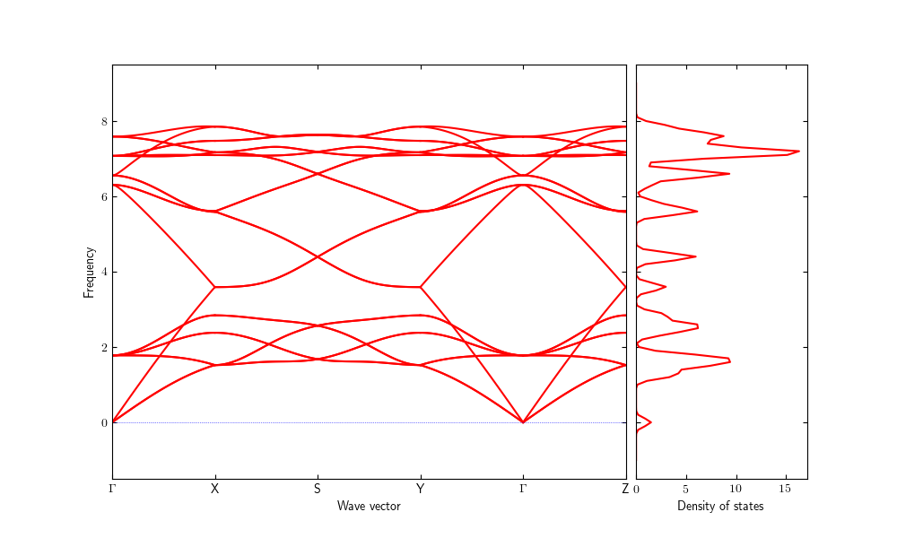We would like to calculate the anharmonic effects in the following calculation to get phonon spectrum at T = 300 K. This is how the directory phonon_std looks like after this step:
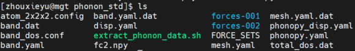Copy atom.config from ‘phonon’ into the directory as well as etot.input and pseudopotential files. Modify MP_n123 to ‘2 2 2 0 0 0 3’ and set IN.ATOM = atom.sup.config. Prepare htp.input like this:
- ::
-97974 ！iseed (random seed for isign) 300 ! temperature (K) 2 2 2 ! m1,m2,m3 (must be the same as in PWphonon.in) atom.config ! unit cell file (make sure same element together) 1 ! dQ formula: 1, dQ=sqrt(kT/Freq^2);2, using energy, Freq=Freq0+alpha*dQ^2 1 ! mod_fix: 1: choose all dQ; 2: select dQ from Freq.fix(run set_freq_fix.r) 0.5 ! mixing parameter for dQ for the iterations
Run gen_dR_config0.r inside phonon_std. It will generate: dQ.000, Freq.000 and atom_sup.config. Then run a PWmat calculation again.
After the PWmat calculation in step(4) is finished, one should run ‘gen_dR_config2.r 1’ inside phonon_std to generate dQ.001, Freq.001 and atom_sup.config. Then run a PWmat calculation again. The command ‘gen_dR_config2.r iter’ will take the OUT.FORCE and dQ.iter-1 to generate Freq.iter, and uses the scheme specified in htp.input to generate dQ.iter from Freq.iter. The above procedures form an iteration loop. This iteration could be implemented using the modified slurm.pbs (other scripts follow similar grammar):
#!/bin/sh
#SBATCH --partition=gpu
#SBATCH --job-name=ph
#SBATCH --nodes=1
#SBATCH --ntasks-per-node=4
#SBATCH --gres=gpu:4
#SBATCH --gpus-per-task=1
module load intel/2016
module load cuda/8.0
module load pwmat/2022.02.11
for iter in {1..10}
do
echo $iter
~/SRC_highT_phonon/gen_dR_config2.r $iter
mpirun -np $SLURM_NPROCS -rdma PWmat | tee output
mv OUT.WG IN.WG
mv OUT.RHO IN.RHO
iter=$((iter+1))
done
We use 10 iterations here. If the convergence seemed not good, users could manually intepose using set_freq_fix.f, or change dQ.iter and gen_config_fromdQ.f. For the case of GaAs, after 3 iterations, the frequencies are converged. Here is the figure for the frequencies of different modes (from Freq.iter) on different iterations. The format of Freq.iter is:
- ::
nq nband THz^2_x THz^2_y THz^2_z
Here nq and nband represent the q-points (totally 8 q-points here) and band index (totally 24 phonon modes here). So there will be 192 rows in Freq.iter. We choose THz^2_x to plot the frequencies of different modes:
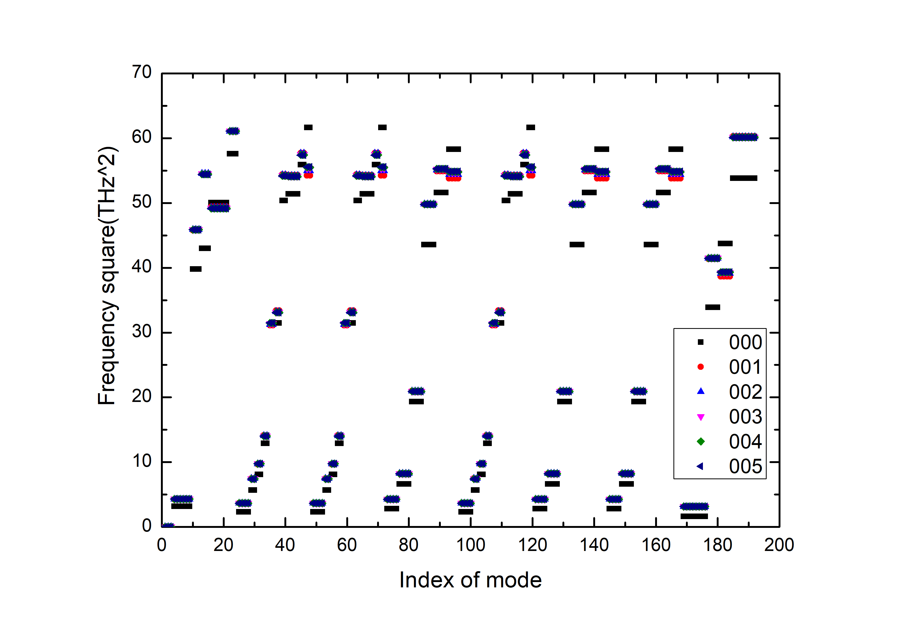For the case of GaAs, after 3 iterations, the frequencies are converged. Finally, run ‘gen_force_set.r’ inside phonon_std to generate FORCE_SETS.new. Copy FORCE_SETS.new to FORCE_SETS and run new script extract_phonon_data2.sh, then users will ger the new phonon spectrum and files like: mesh.yaml.dat, band.dat. The extract_phonon_data2.sh is like follow:
#!/bin/sh
PWmat2Phonopy --pwmat band_dos.conf -c ../atom.config -p
phonopy-bandplot --gnuplot band.yaml > band.dat
echo "The data files can be used to plot"
ls *.dat
Note: in reality, it might also be affected by the sign(atom) (the random seed in htp.input). One might want to check that by doing a few random seed calculations.
PWphono3py¶
This module is the interface between PWmat and phonoepy. Phono3py could be used to calculate phonon-phonon interaction and related properties using the supercell approach, including lattice thermal conductivity, phonon lifetime/linewidth and imaginary part of self energy.
Install¶
We highly recommend to install phonon3py with conda, you can follow these steps to install it. The first step is to install anaconda3, so you can build an conda environment. After you have install anaconda3, you can create a new environment named phono3py (this is really important, or you python environment on mstation will be confused), specify that python version >=3.6.
- ::
$ conda create –name phono3py python=3.x #(version>=3.6)
Active the new environment:
$ conda activate phono3py
Then you can install the package in this environment. There are a few ways to install phono3py (https://phonopy.github.io/phono3py/install.html), we recommend to use conda:
$ conda install -c atztogo phono3py
Sometimes conda could not find the matched version, then you could use:
$ pip install phono3py
If it fails as well, use the following script:
#!/bin/bash
mkdir dev
cd dev
git clone https://github.com/phonopy/phonopy.git
git clone https://github.com/phonopy/phono3py.git
cd phonopy
git checkout develop
python setup.py build
pip install -e .
cd ../phono3py
git checkout develop
echo "[phono3py]" > site.cfg
echo "extra_compile_args = -fopenmp" >> site.cfg
python setup.py build
pip install -e .
Next you can install the interface: (1) Download PWphono3py-xxx.tar.gz from the module page. (2) Go to the directory where you put pwphono3py-xxx.tar.gz and type
$ pip install pwphono3py-xxx.tar.gz
Unzip the PWphono3py-xxx.tar.gz wherever you prefer by
$ tar -zxvf pwphono3py-xxx.tar.gz
Modify PYTHONPATH and PATH in ~/.bashrc, for instance:
export PYTHONPATH=(where you place it)/pwphono3py-0.0.1:$PYTHONPATH
export PATH=(where you place it)/pwphono3py-0.0.1/bin:$PATH
Go to the directory pwphono3py-xxx and type
$ python setup.py install
Copy script pypwmat3.py to pwphono3py.egg-info/scripts/pypwmat3.py and all settled.
Usage¶
Users could calculate properties related to phonon-phonon interaction such as: thermal conductivity, phonon lifetime/lifewidth and imaginary part of self energy. Simple process is as follow:
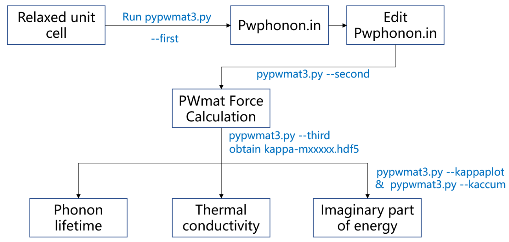Create a directory named ‘phonon3’. Prepare input files named etot_fc2.input, etot_fc3.input, atom.config and corresponding pseudopotential files inside ‘phonon3’. The main content of etot_fc2.input is as follows:
1 4
IN.ATOM = atom.config
JOB = scf
Ecut = 60
IN.PSP1 = Si.SG15.PBE.UPF
MP_N123 = 2 2 2 0 0 0
OUT.FORCE = T
OUT.WG = F
And the etot_fc3.input only changes ‘MP_N123 = 1 1 1 0 0 0’ and ‘4 1’ in first line correspondingly. Type
$ pypwmat3.py --first
The default configuration file PWphonon3.in will be generated. Users could edit it following the instructions.
JOB = scf #
NODES_FC2 = 1 4 # node1 node2 for pwmat parallel configuration
NODES_FC3 = 4 1 # node1 node2 for pwmat parallel configuration
WALL_TIME = 1000:00:00 # wall time for the queue system (torque): hours:minutes:seconds
MP_N123_FC2 = 2 2 2 0 0 0 # k-mesh for the supercell calculations; it is 2 2 2 0 0 0 for the unitcell calculation
MP_N123_FC3 = 1 1 1 0 0 0 # k-mesh for the supercell calculations; it is 2 2 2 0 0 0 for the unitcell calculation
DIM_FC2 = 2 2 2 # supercell dimension for 2 order force which will be used to make displacements.Turn it to 0,if there is no need
DIM_FC3 = 3 3 3 # supercell dimension for 3 order force which will be used to make displacements
ACCELERATION = .True. #read in in.wg in.rho from forces-001 calculation
FC_SYMMETRY = .True. # This tag is used to symmetrize force constants partly
READ_FC2 = .True. #create fc2
READ_FC3 = .True. #create fc3
PA = .False. # Transformation matrix from a non-primitive cell to the primitive cell.
PRIMITIVE_AXIS = 0 1/2 1/2 1/2 0 1/2 1/2 1/2 0 # the primitive cell for building the dynamical matrix
DISPLACEMENT = 0.03 #displament
Parameter in PWphonon.in is here:
JOB: scf
NODES_FC2, NODES_FC3: PWmat parallel configuration (Obtained from etot_fc2.input, etot_fc3.input)
WALL_TIME: Wall time for the queue system (torque): hours: minutes: seconds
MP_N123_FC2, MP_N123_FC3: k-mesh for the supercell calculations
DIM_FC2, DIM_FC3: Supercell dimension for 2nd order force (3rd order force) which will be used to make displacements
ACCELERATION: Read in in.wg in.rho from forces-001 calculation
FC_SYMMETRY: This tag is used to symmetrize force constants partly
READ_FC2, READ_FC3: Read 2nd order force (3rd order force) constants from fc2.hdf5, fc3.hdf5.
PA, PRIMITIVE_AXIS: Transformation matrix from a non-primitive cell to the primitive cell
DISPLACEMENT: Atomic displacement distance is specified. This value may be increased for the weak interaction systems and descreased when the force calculator is numerically very accurate.
MESH: Sampling mesh
CUTOFF_PAIR, CUTOFF_PAIR_DISTANCE: Reduce the number of supercells with displacements to be calculated
BAND: Special q points in Brillioun zone
BAND_LABELS: Labels of the special q points
BAND_POINTS: Number of q-point along the high symmetry path
BRILLOUIN_ZONE_INTEGRATION, SIGMA_VALUE: “–thm”: Tetrahedron method (default choice); “–sigma”: Smearing method; “–sigma-cutoff”: Cutoff parameter for smearing method; “–full-pp”: Calculate all elements of phonon-phonon interaction strength
GP_OR_GA, GRID_POINTS_OR_GRID_ADDRESSES: gp: Grid points by their ID; ga: Grid points by address with three integer values
NAC: Non-analytical term correction
SPECIFIC_TEMPERATURES, TMAX/TMIN/TSTEP: Specific temperatures (in step 3)
TEMPERATURE_LIFETIME: Specific temperatures for lifetime plot (in step kappaplot)
TEMPERATURE_KACCUM: Specific temperature for kaccum plot (in step kaccum)
Type
$ pypwmat3.py --second
In this step, atom.configs with displacements are created. Files disp_fc3.yaml and disp_fc2.yaml are also created. Each force calculation will be executed under the directory named dispxxxxx (and disp_fc2-xxxxx), where xxxxx is sequential number. Note: It might generate lots of directory to calculate disp_fc3.yaml, which means hundreds of calculations. So be careful before using this module!

For thermal conductivity calculation, users need files including disp_fc3.yaml, disp_fc2.yaml and PWphonon3.in. Tyoe
$ pypwmat3.py --third
Then FORCES_FC3 and FORCES_FC2 are created, followd by fc3.hdf5 and fc2.hdf5. File kappa-mxxxxxx.hdf5 is the output file of thermal conductivity calculation. You can get the following data from this file: mesh, frequency, gamma, gamma_isotope, group_velocity, heat_capacity, kappa, mode-kappa, gv_by_gv, q-point, temperature, weight, ave_pp and kappa_unit_conversion. (Go to https://phonopy.github.io/phono3py/hdf5_howto.html for details) (4) To write grid points, type
$pypwmat3.py --fourth
In this command, phonon lifetimes at many grid points are calculated in series. The phonon lifetime calculation at each grid point can be separately calculated since they are independent and no communication is necessary at the computation. File ir_grid_points.yaml is obtained. (5) To plot kappa, users need files kappa-mxxxxxx.hdf5 and PWphonon3.in. Type
$pypwmat3.py --kappaplot
Users could find the lifetime in the 31th temperature plotted in ’lifetime‘ by default or users could specify the temperature in PWphonon3.in. Thermal conductivity can be found in ’thermal_conductivity‘. File kaccum.dat is created in this step. The format if kaccum.dat is as follows: The first column gives frequency in THz, and the second to seventh columns give the cumulative lattice thermal conductivity of 6 elements, xx, yy, zz, yz, xz, xy. The eighth to 13th columns give the derivatives. There are sets of frequencies, which are separated by blank lines. Each set is for a temperature. There are the groups corresponding to the number of temperatures calculated. (6) You can get cumulative physical properties with respect to frequency or mean free path are calculated using this command:
$pypwmat3.py --kaccum
Files kaccum.dat, cv.dat, gamma.dat, gv-norm.dat, mfp.dat. tau.dat created in plot kappa step are required. All the xxx.dat files can be viewed with a text editor. (Notepad++etc.). The following properties can be found in ‘kaccum’.
tersor properties¶
Cumulative thermal conductivity with respect to frequency or mean free path.
kaccum.dat: In kaccum.dat, the first column gives frequency in THz, and the second to seventh columns give the cumulative lattice thermal conductivity of 6 elements, xx, yy, zz, yz, xz, xy. The eighth to 13th columns give the derivatives.
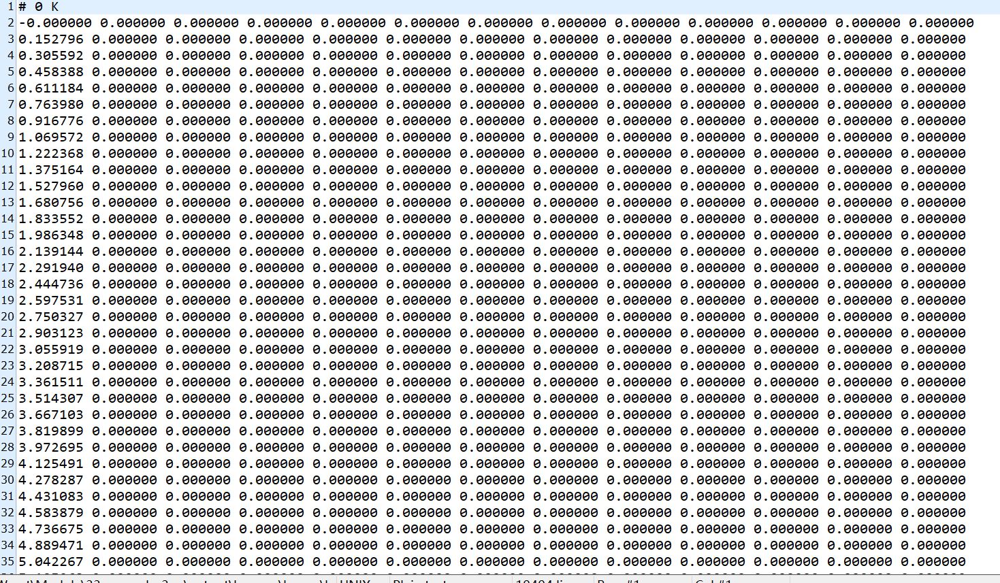
In this example, kappa_xx, kappa_yy and kappa_zz almost unanimously.
mfp.dat: Mean free path

In this example, mfp_xx, mfp_yy and mfp_zz almost unanimously.
scalar properties¶
Those values are normalized by the number of full grid points. This is understood as normalized for one primitive cell. Number of columns of output data is three, frequency, cumulative property, and derivative of cumulative property.
gamma.dat: Imaginary parts of self energies

tau.dat: Phonon lifetime

cv.dat: Model heat capacity

gv-norm.dat: Absolute value pf group velocity
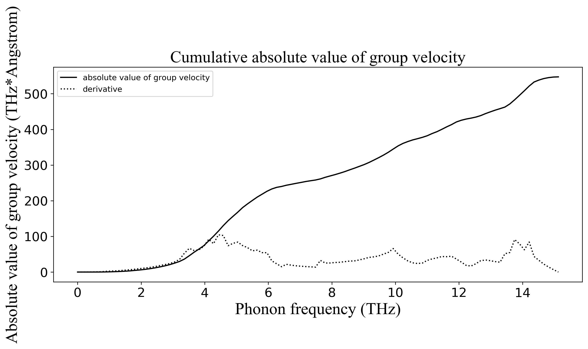Electron-phonon coupling (EPC)¶
This module could help users calculate electron-phonon coupling coefficient matrix using maximally localized Wannier functions (MLWFs). The core objective of calculating electron-phonon coupling is to calculate the matirx element \(\langle\psi_{m\vec{k}_{1}}|\frac{\partial H}{\partial\nu_{b\vec{q}}}|\psi_{n\vec{k}_{2}}\rangle\) in which \(\vec{k}_{1}+\vec{q}=\vec{k}_{2}\). It usually need intensive k mesh around Fermi level for accurate decription of the electron-phonon coupling, which is really expensive using plane wave basis. One of the popular solution is to do a plane wave calculation with sparse k mesh first. Then project it to MLWFs. Since the MLWFs is highly localized in real space, it could generate highly delocalized plane waves after Fourier transformation. The new generated plane waves could be used to the interpolation of getting intensive k mesh wavefunctions.
Basic theory of MLWFs¶
Bloch wavefunctions could be expanded by plane waves or atomic orbitals. Wannier functions are typical localized orbitals basis which is widely used in tight binding model
\(\phi(\vec{r}-\vec{R_{\rho}})=\frac{1}{\sqrt{N_{p}}}\sum_{k}e^{-i\vec{k}\cdotp\vec{R_{p}}}\psi_{k}(\vec{r})\)
However, they are not good basis due to the gauge flexibility, in other words, infinite Wannier functions could be generated like
\(\phi(\vec{r}-\vec{R_{\rho}})=\frac{1}{\sqrt{N_{p}}}\sum_{k}e^{-i\vec{k}\cdotp\vec{R_{p}}}e^{i\phi_{k}}\psi_{k}(\vec{r})\)
Although \(e^{i\phi_{k}}\psi_{k}(\vec{r})\) is physically equal to \(\psi_{k}(\vec{r})\), this two Wannier functions are different, which will make trouble for subsequent processing. So we should choose a reasonable gauge if we want to use Wannier functions. Nicole Marzari and David Vanderbilt have found a reasonable gauge. Wannier functions contains both gauge invariance and gauge dependent parts, one could get the only maximally localized Wannier functions (MLWFs) by minimizing the gauge dependent part. Users could get more information about MLWFs in
Phys.Rev.B 56,12847.
Prepare EPC utility programs¶
Download EPC.tar.gz and untar it using ‘tar -xzvf EPC.tar.gz’.

Edit ~/.bashrc or copy the needed utility files to specific directory
export PATH=(where you place it)/EPC:$PATH
Calculation procedure¶
To get the EPC matrix elements, users should calculate both wavefunctions and phonon modes. The procedure could be divided into four steps:
Do JOB = SCF to generate MLWFS
Calculate phonon modes using module PyPWmat
Do JOB = HPSI to write MLWFs into G space agian
Calculate EPC matrix
We will take AlAs as an example to display the procedure above.
SCF calculation to generate MLWFs¶
Prepare input files of SCF calculations. The main tags in etot.input are like:
1 4
IN.ATOM = atom.config
IN.PSP1 = Al.SG15.PBE.UPF
IN.PSP2 = As.SG15.PBE.UPF
JOB = SCF
MP_N123 = 4 4 4 0 0 0 2
XCFUNCTIONAL = PBE
PWSCF_OUTPUT = T
OUT.FORCE = T
Note: The MP_N123 here must be consistent with the following supercell of MLWFs. Users should close the symmetry of MP_N123 and keep PWSCF_OUTPUT = T. The atom.config might like:
2
Lattice vector
0 2.799 2.799
2.799 0 2.799
2.799 2.799 0
Position, move_x, move_y, move_z
33 0.0000000 0.0000000 0.0000000 0 0 0
13 0.25 0.25 0.25 0 0 0
After the SCF calculation finished, type ‘in_wann.x’ inside the SCF directory to generate files wannier90.win and wannier90.pw2wan. To run in_wann.x, both atom.config and OUT.KPT are needed. Users might get the screen below if in_wann.x is successfully run.
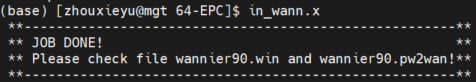Next edit wannier90.win. Pay attention to several tags in wannier90.win:
num_wann = 8 #Number of WFs
num_bands = 8 #In this module num_bands = num_wann
num_iter = 100 #Number of iterations for the minimisation of WFs spread
mp_grid = 4 4 4 #Dimensions of the Monkhorst-Pack grid of k-points
wannier_plot = T #Plot the WFs
wannier_plot_supercell = 4 #Size of the supercell along all three dimensions for plotting the WFs
exclude_bands = 9-18 #List of bands to exclude from the calculation
begin projections #begin projection
f=0.000000,0.000000,0.000000:l=0;l=1 #site:ang_mtm (site: Fractional coordinates of As; ang_mtm: l=0,1,2,3 for s,p,d,f orbtals correspondingly)
f=0.250000,0.250000,0.250000:l=0;l=1 #site:ang_mtm (site: Fractional coordinates of As; ang_mtm: l=0,1,2,3 for s,p,d,f orbtals correspondingly)
end projections #End projections
Note: (1) Num_wann depends on the numbers of orbitals. Since the valence electron orbitals for both Al and As are 1 s orbital and 3 p orbitals, num_wann=(1+3)+(1+3)=8. (2) The super-unit-cell is wannier_plot_supercell times the unit cell along all three linear dimensions (the ‘home’ unitcell is kept approximately in the middle) if wannier_plot_supercell is provided as a single integer. Otherwise, if three integers are provided, the super-unit-cell is wannier_plot_supercell(i) times the unit cell along the i-th liner dimension. In this example, the size of super-unit-cell should be consistent with k-mesh, which means 4x4x4 supercell. (3) Exclude_bands could be set from num_wann+1 to NUM_BANDS in SCF calculation. Users could set NUM_BANDS in etot.input or use the defualt value. (4) l=0,1,2,3 represent 1,3,5,7 projections. The summation of projections should be consistent with num_wann. Wannier90 also provide hybrid orbitals projections. See wannier90_user_guide for details.
Users could use wannier90.pw2wan directly for systems without magnetism.
&inputpp
outdir = './'
prefix = 'prefix'
seedname = 'wannier90'
spin_component = 'none'
write_mmn = .true.
write_amn = .true.
write_unk = .true.
/
Type
$wannier90.x -pp wannier90
$pw2wannier90.x < wannier90.pw2wan
$wannier90.x wannier90
Users should use the wannier90.x provided in EPC, since the wannier90.x has been recompiled by us. Finally, users could get WFs. But one should check the wannier center to ensure your WFs are localized enough!
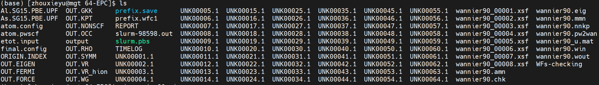Calculate phonon modes using PyPWmat¶
See module PyPWmat for details. Please go familiar with module PyPWmat first! Edit PWphonon.in just like job=std and pay attention to three parameters:
MP = 4 4 4 #Consistent to k mesh
GAMMA_CENTER = .TRUE.
MESH_SYMMETRY = .FALSE.
Users could get mesh.yaml and mesh.yaml.dat. Copy them to the SCF directory.
Write MLWFs into G space agian¶
Type ‘DISPLACEMENT.x’ inside the SCF directory and users could get disp-xxx folds and scripts such as check-run.sh, ln-IN.WG.sh, run-disp.sh and run-hpsi.sh. Type ‘./run-disp.sh’ to run the SCF calculations in disp-xxx. Note: Makesure the suffix submit script is ‘.pbs’. After SCF calculations, go to disp-000 and type ‘G-wann.x’ to write WFs into G space. Go back to the upper folder and type ‘./ln-IN.WG.sh’. Then users could get fold hpsi and the needed files inside. Type ‘./run-hpsi.sh’, JOB = HPSI will be performed in disp-xxx. Finally, users could get OUT.HPSI, which will be used in next step. Note: Script named check-run.sh could be used to check whether the calculation is completed in each subdirectory.
Calculate EPC matrix¶
Go to SCF directory and type ‘calc_EPW.x’. Then users could get epw.out. Considering the huge number of matrix elements, users had better not output every elements unless it is necessary. One could use file epc.input to control the output range of \(\langle\psi_{m\vec{k}_{1}}|\frac{\partial H}{\partial\nu_{b\vec{q}}}|\psi_{n\vec{k}_{2}}\rangle\):
5 5 #Range of m
5 5 #Range of n
1 3 #Range of k1
1 3 #Range of k2
We traverse all phonon modes in EPC calculations. Run calc_EPC.x after edit epc.input. Here is the sample of content in OUT.EPC:

The first 3 lines of each block is \(\vec{k}_{1}\), \(\vec{q}\),:math:vec{k}_{2} satisfying \(\vec{k}_{1}+\vec{q}=\vec{k}_{2}\). The following 3N lines could be divided into 11 columns. The first and second columns represent m and n. The 3th-6th columns represent the serial number of k1, b, q, k2, correspondingly. The 7th and 8th columns are eigen energy (in eV) of k1 and k2. The 9th column is the energy (in eV) generated from phonon frequency. The 10th and 11th columns are the real part and imaginary part of the EPC elements (in a.u.). The last column is the model (in eV) of matrix elements. Users could use ‘degenerate.x’ to degenerate the output EPC as needed. We consider the elements are degenrate if the 7th to 9th columns of them are the same. Then we will do an arithmetic average of their models.